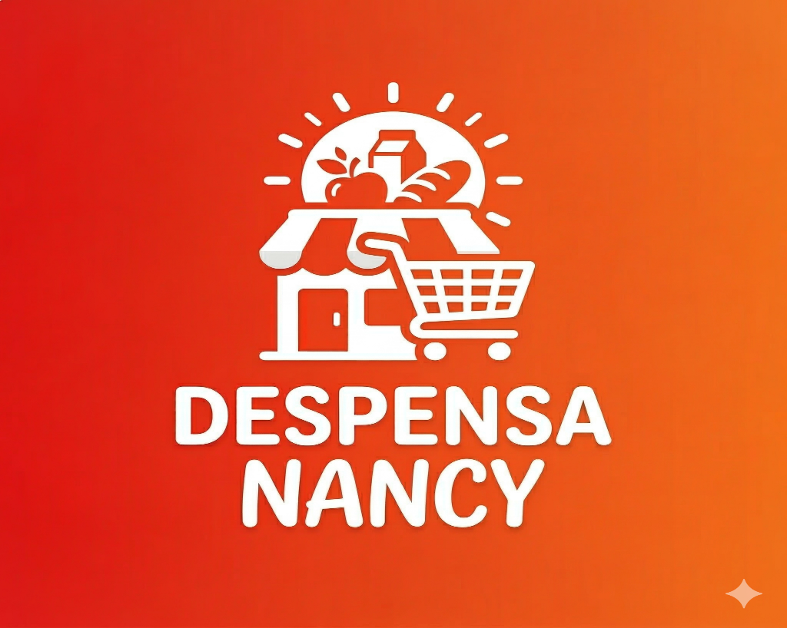

Presentación del Desarrollador
Sobre mí
Mi nombre es John Byron Calle Burgos, estudiante de Ingeniería de Software de la Universidad de Guayaquil, cursando actualmente el sexto semestre. En esta bitácora documento el proceso real de análisis, diseño y despliegue de la solución web desarrollada para modernizar el negocio familiar de mi madre.
Contexto y Justificación de la Experiencia
¿Qué se hizo, cuándo y por qué?
A inicios de marzo de 2026, decidí emprender el desarrollo de un catálogo interactivo y plataforma de pedidos web para la Despensa Nancy, el negocio de abarrotes de mi madre ubicado en Guayaquil.
¿Por qué surgió el proyecto? Muchos clientes del barrio solicitaban consultar precios y hacer pedidos a domicilio mediante mensajes de texto, lo cual generaba demoras, confusión con productos agotados y saturación en la atención presencial. El objetivo fue construir una aplicación web ligera accesible sin necesidad de descargas pesadas desde tiendas de aplicaciones, permitiendo a los clientes escanear un código QR o abrir el enlace para ver el inventario actualizado y emitir pedidos directos.
Desarrollo Cronológico en Primera Persona
A lo largo de este proyecto enfrenté decisiones técnicas y retos reales divididos en tres etapas consecutivas:
Etapa 1: Relevamiento de requerimientos y toma de inventario inicial
En la primera semana me senté junto a mi madre para inventariar más de 500 productos de la despensa (víveres, lácteos, bebidas, artículos de aseo y confitería). Decisión técnica: Prioricé un modelo de datos plano y accesible, descartando sistemas de autenticación engorrosos para que cualquier cliente, incluso adultos mayores, pudiera navegar sin barreras. Dificultad: La volatilidad de precios en el mercado local y el volumen de artículos provocaba desajustes continuos. Resultado: Logré estructurar una base de datos categorizada con nombres claros, unidades de medida y precios estables para el lanzamiento.
Etapa 2: Diseño de interfaz y accesibilidad móvil
Durante la segunda etapa diseñé la interfaz gráfica enfocada 100% en teléfonos inteligentes, utilizando HTML semántico y CSS responsivo. Decisión técnica: Decidí implementar una identidad visual cálida basada en el logotipo oficial de la despensa y un diseño tipo tarjeta para cada producto. Dificultad: La optimización de imágenes fotográficas de los productos para evitar un consumo excesivo del plan de datos de los clientes. Resultado: Una tasa de carga menor a 1.5 segundos en redes móviles promedio y visualización nítida en pantallas pequeñas.
Etapa 3: Pruebas con clientes locales, código QR y despliegue continuo
En la tercera etapa realicé el despliegue de producción en la plataforma Netlify bajo el dominio público despensanancy.netlify.app. Decisión técnica: Diseñé un código QR con el logotipo corporativo para colocarlo en un cartel visible en el mostrador físico del local. Dificultad: Adaptar el canal de recepción para que el cliente pudiera generar una orden estructurada sin requerir pasarelas de pago costosas. Resultado: Recepción exitosa de los primeros pedidos vecinales mediante confirmación ágil por mensajería.
Recursos y factores clave que intervinieron
- Entorno de desarrollo: Visual Studio Code con extensiones de previsualización en vivo.
- Control de versiones: Git y repositorio en GitHub para el control de cambios de código.
- Plataforma de despliegue: Netlify para alojamiento estático continuo y seguro (HTTPS).
- Fotografía y diseño gráfico: Toma directa de fotografías de productos y diseño del logotipo institucional.
- Retroalimentación de usuarios: Pruebas de campo con clientes habituales de la despensa.
Secuencia cronológica de ejecución
- Levantamiento de productos, precios y entrevistas de necesidad con la dueña del negocio.
- Maquetación de la estructura HTML, jerarquía semántica, estilización y enlace al catálogo.
- Generación del código QR de acceso rápido, impresión de soporte físico y pruebas de usuario finales.
«La tecnología no es nada sin la gente. Lo importante es que tengas fe en ellos, que sean básicamente buenos e inteligentes, y si les das las herramientas adecuadas, harán cosas maravillosas con ellas.»
Métricas y Registro de Datos Observados
A continuación se detallan los registros cuantificables de las tareas ejecutadas, tiempos invertidos y su estado actual:
| Actividad / Tarea | Fecha estimada | Tiempo invertido | Cantidad / Alcance | Observación principal | Estado |
|---|---|---|---|---|---|
| Inventario fotográfico y precios | 02/03/2026 | 14 horas | Más de 500 artículos | Se clasificaron más de 500 productos y abarrotes por categorías de consumo. | Completado |
| Maquetación y estilos semánticos | 08/03/2026 | 12 horas | 1 página principal | Se verificó contraste visual y compatibilidad móvil. | Completado |
| Configuración de dominio y QR | 13/03/2026 | 3 horas | 1 código QR + hosting | Despliegue exitoso en Netlify con certificado SSL activo. | Completado |
| Módulo de pedidos directos | 20/03/2026 | 8 horas | Integración WhatsApp | Permite enviar el pedido resumido con un solo clic. | En producción |
Evidencias Visuales y Ubicación
Fotografías y recursos gráficos originales del proyecto implementado para la Despensa Nancy:

Ubicación de referencia del negocio
Mapa interactivo que contextualiza el área geográfica de atención comunitaria de la despensa en la ciudad de Guayaquil:
Aprendizajes Clave y Propuestas de Mejora
Aprendizaje significativo
El mayor aprendizaje fue comprender que el éxito de una aplicación web para un negocio familiar no radica en la complejidad de librerías o frameworks sofisticados, sino en la **usabilidad real y la simplicidad técnica**. El uso de HTML5 semántico bien estructurado garantizó que la página fuese ligera, cargara de forma casi instantánea en dispositivos de gama media o baja, y fuese comprendida tanto por clientes jóvenes como por personas de la tercera edad.
Mejora técnica si repitiera la actividad
Si volviera a desarrollar este proyecto desde cero, implementaría desde el primer día un **panel administrativo con almacenamiento en base de datos ligera (o Google Sheets como API)**. Esto le permitiría a mi mamá cambiar el precio de los huevos, leche o aceite directamente desde su celular con un formulario sencillo, eliminando la necesidad de que yo deba editar archivos de configuración de forma manual ante cada variación de mercado.
Contacto y Solicitud de Pedidos
Si deseas cotizar productos al por mayor, hacer sugerencias o contactar a la administración de Despensa Nancy, completa el siguiente formulario: